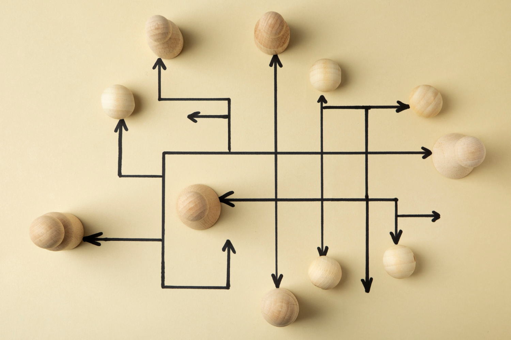
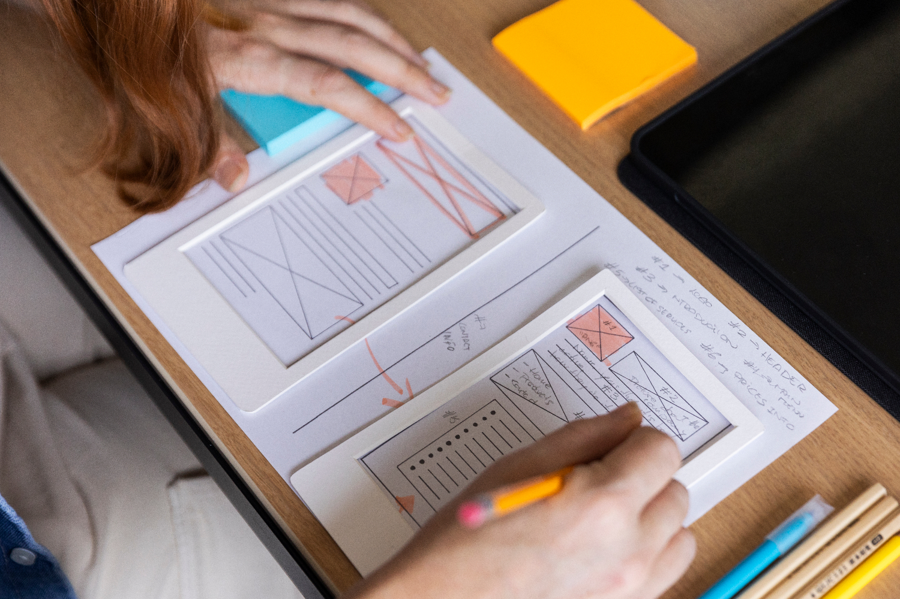
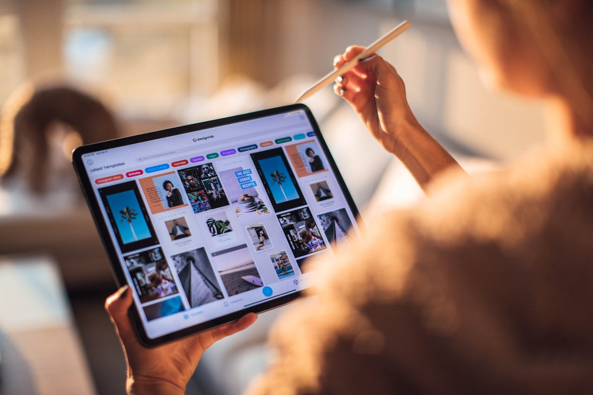
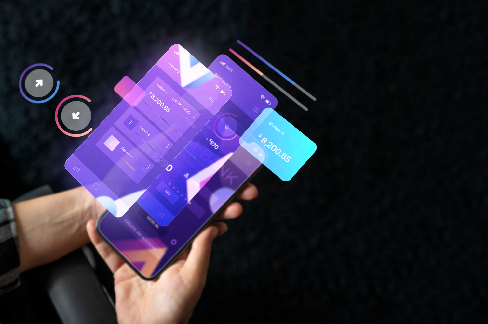
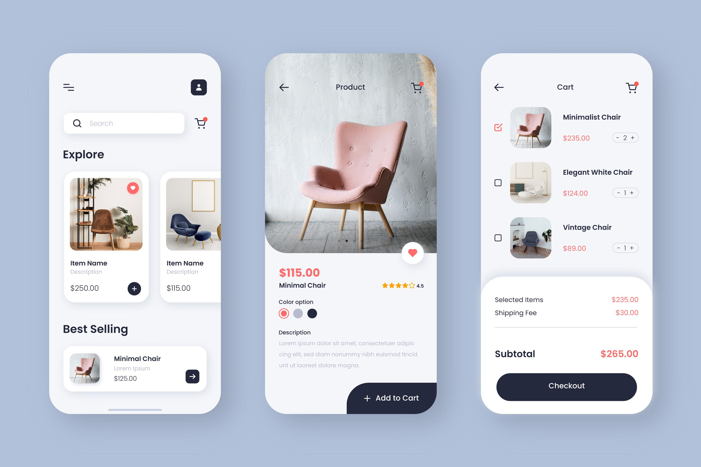

UX Research/Analysis
Gain valuable insights with our UX Research & Analysis services. We analyse user needs, behaviors, and pain points to identify opportunities for improvement and enhance your design.

User Flows
Optimise your user experience with User Flows. We map out intuitive, efficient paths that guide users seamlessly through your product, ensuring a smooth journey and enhanced usability at every step.

Wireframing
Bring your concepts to life with our UX Wireframing service. We create clear, structured wireframes that visualise user flows, streamline development, minimise errors, and ensure a seamless user experience.

Interaction Design
Elevate your product with our Interaction Design service. We create intuitive, engaging interactions that improve usability, streamline navigation, and boost user retention—delivering a seamless, memorable experience that keeps users coming back.

UI Design
Transform your product’s visual appeal with our UI Design service. We design clean, intuitive layouts, refined typography, vibrant color schemes, and responsive design elements, creating a cohesive experience that strengthens your brand and keeps users engaged.

Prototyping
Bring your ideas to life with our Prototyping service. We create interactive, high-fidelity prototypes to test design concepts early, speeding up feedback, reducing risks, and ensuring a user-centered final product.
Photos: pexels & freepik